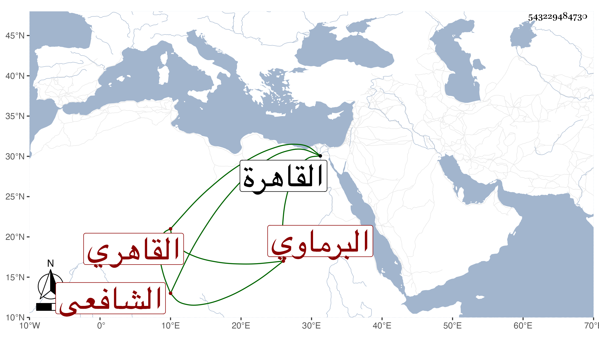

0902Sakhawi.DawLamic.ITO20230111-ara1.EIS1600.543229484730
Biography ID: 543229484730
أحمد بن عثمان بن إبراهيم بن أحمد بن عبد اللطيف بن النجم بن عبد المعطي الشهاب بن الفخر البرماوي القاهري الشافعي الآتي أبوه . ولد قبل سنة عشر وثمانمائة بالقاهرة ونشأ بها فاشتغل بالفقه والعربية وغيرهما ، ومن شيوخه في النحو الحناوي وتميز فيه وتكسب بالشهادة بل ولي القضاء ولم يحصل فيه على طائل ، وكان خيرا وفي الظن أنه تأخر إلى قريب الستين .
